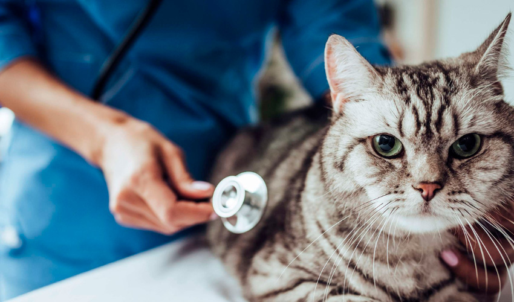

¡No te olvides! La salud de tu mascota es fundamental. Lleva a tu compañero de cuatro patas al veterinario regularmente para:
🔹Prevenir enfermedades
🔹Detectar problemas de salud temprano.
🔹Mantener su vacunación al día.
🔹Asegurarte de que esté recibiendo la nutrición adecuada.
La atención regular del veterinario te ayudará a mantener a tu mascota saludable y feliz. ¡No esperes, programa tu cita hoy mismo!

¿Tienes alguna duda sobre la salud de tu mascota? Consulte a su veterinaria de confianza. En Veterinarias Patitas, tenemos un amplio staff de profesionales capacitados y experimentados para brindarle la mejor atención y cuidado a tu compañero de cuatro patas. ¡Confíe en nosotros para mantener a su mascota saludable y feliz!

¿Necesitas asesoramiento sobre la salud de tu mascota? ¡No solo estamos presentes en nuestras clínicas! También podemos asesorarte de manera online. Deja tus datos en nuestro formulario de contacto y nos pondremos en contacto contigo de inmediato.